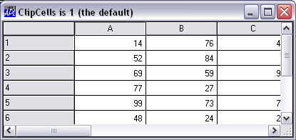
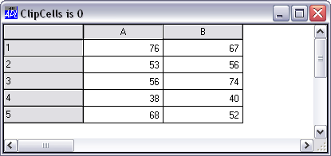

By default, the Grid inherits its font from the parent Form, or ultimately, from the Root object. This defaults to your Windows System font.
You can change the font for the Grid as a whole using its FontObj property. This font will be used for the row titles, column titles and for the data. You can separately define the font for the data using the CellFonts property. Thus, for example, if you wanted to use Helvetica 12 for the titles and Arial 10 for the data, you could do so as follows:
'Test.G' ⎕WS 'FontObj' 'Helvetica' 12 'Test.CF' ⎕WC 'Font' 'Arial' 10 'Test.G' ⎕WS 'CellFonts' 'Test.CF'
The FCol and BCol properties specify the foreground and background colours for the text in the data cells. The default colour scheme is black on white. FCol and BCol may define single colours which refer to all the cells, or a set of colours to be applied to different cells
The colour of the gridlines is specified by GridFCol. To draw a Grid with no gridlines, set GridFCol to the same colour as is defined by BCol.
If the Grid is larger than the space occupied by the data cells, GridBCol specifies the colour used to fill the area between the end of the last column of data and the right edge of the Grid, and between the bottom row of data and the bottom edge of the Grid.
The ClipCells property determines whether or not the Grid displays partial cells. The default is 1. If you set ClipCells to 0, the Grid displays only complete cells and automatically fills the space between the last visible cell and the edge of the Grid with the GridBCol colour.
The following example shows a default Grid (ClipCells is 1) in which the third column of data is in fact incomplete (clipped), although this is by no means apparent to the user.

This second picture shows the effect on the Grid of setting ClipCells to 0 which prevents such potential confusion.
